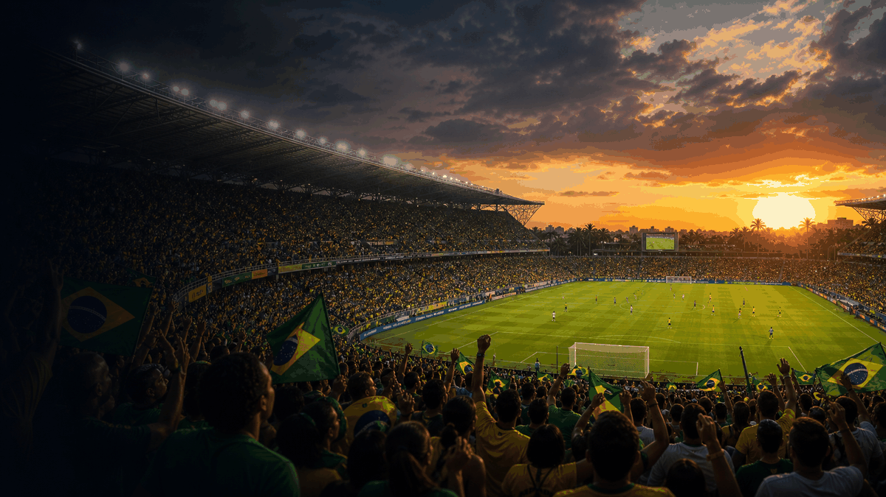
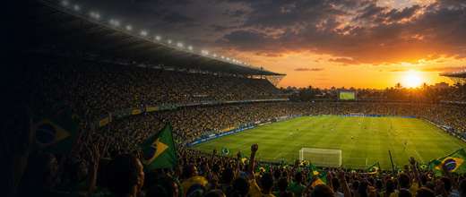

FIFA Women's World Cup
First final1991
Next hostBrazil
Top title leaders
1 United StatesWomen's World Cup wins1991199920152019
United StatesWomen's World Cup wins1991199920152019
4
2 GermanyWomen's World Cup wins20032007
GermanyWomen's World Cup wins20032007
2
3 JapanWomen's World Cup wins2011
JapanWomen's World Cup wins2011
1
4 SpainWomen's World Cup wins2023
SpainWomen's World Cup wins2023
1

More footballFootball topicMore finals, tournaments and calendar moments.
FIFA Women's World Cup 2027 in Brazil
FIFA Women's World Cup guide
FIFA Women's World Cup belongs in the sport, football, fifa womens world cup collection on OneSliders. Use this page as the compact evergreen entry point: start with what the event is, then scan the current edition details, location cues, schedule context and links back into the wider topic. The page is kept short by design, but it should still give enough unique context to distinguish this event from nearby fixtures, annual editions and broader category listings.